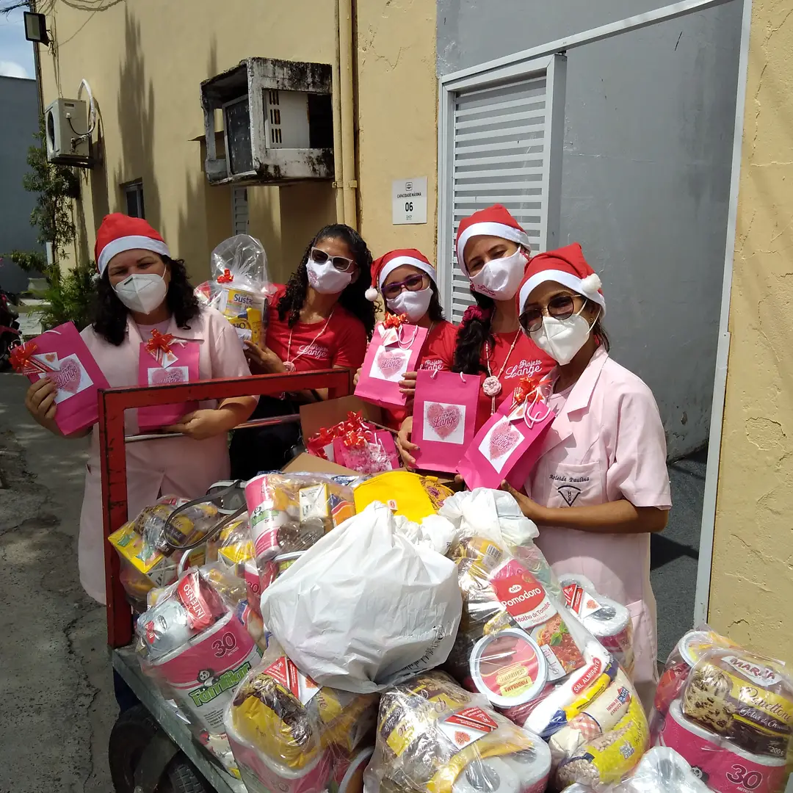

Existem várias formas de apoiar o Projeto Lange e fazer parte dessa corrente de solidariedade.
Qualquer contribuição pode fazer diferença no cuidado oferecido aos pacientes.
Use a chave Pix abaixo para contribuir diretamente com o projeto.
Para dúvidas, doações de itens ou outras formas de contribuição, entre em contato.
Você também pode fazer parte da nossa equipe e ajudar nas campanhas, eventos e ações do projeto.
Converse com a equipe pelo WhatsApp.
Eventos, campanhas, organização ou apoio.
Junte-se à nossa corrente de solidariedade.
